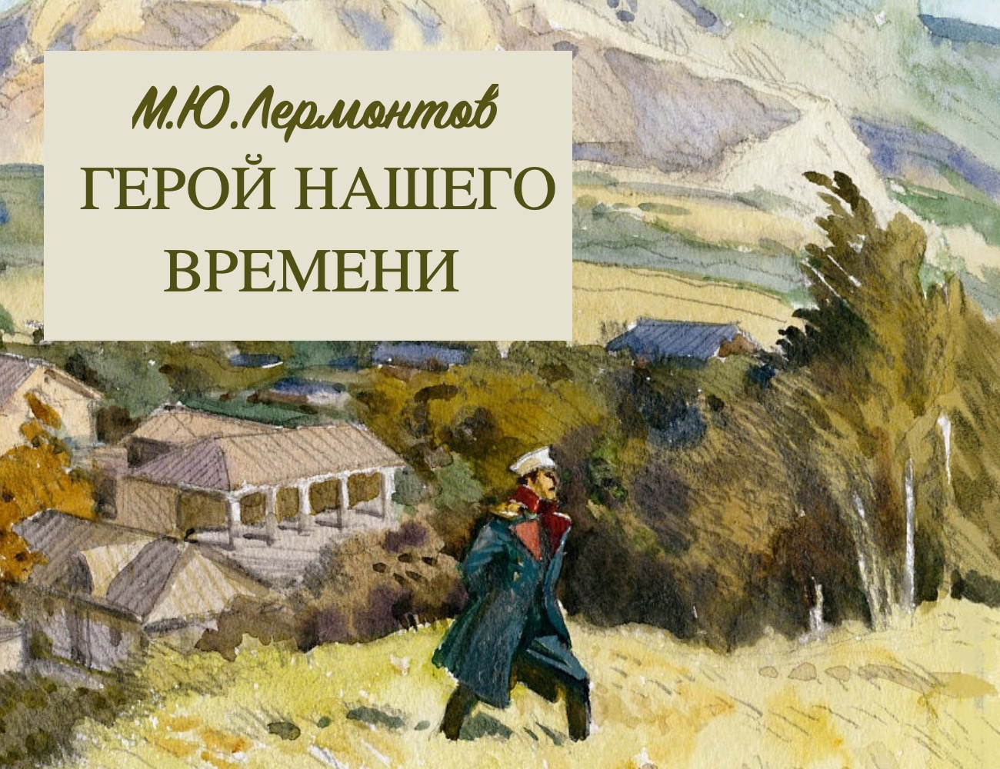
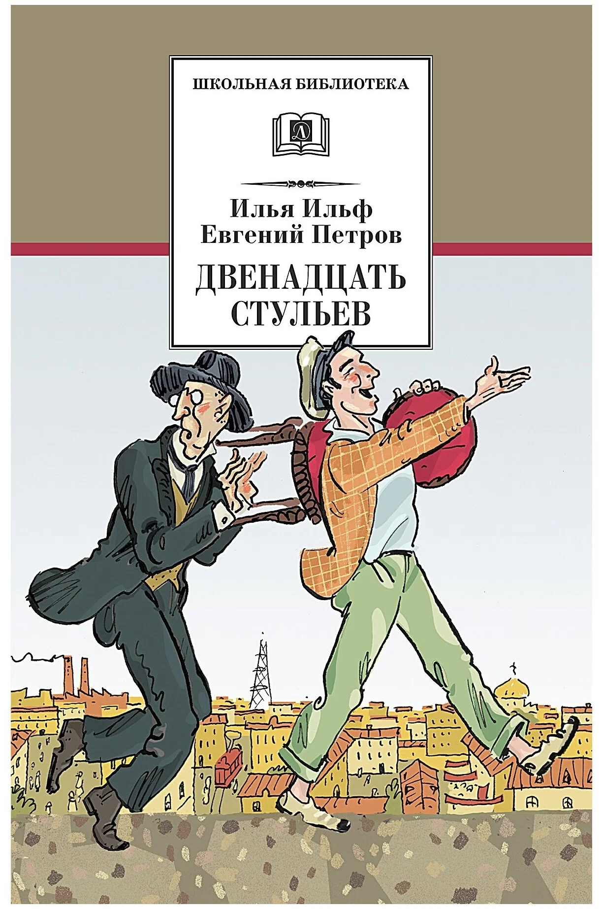
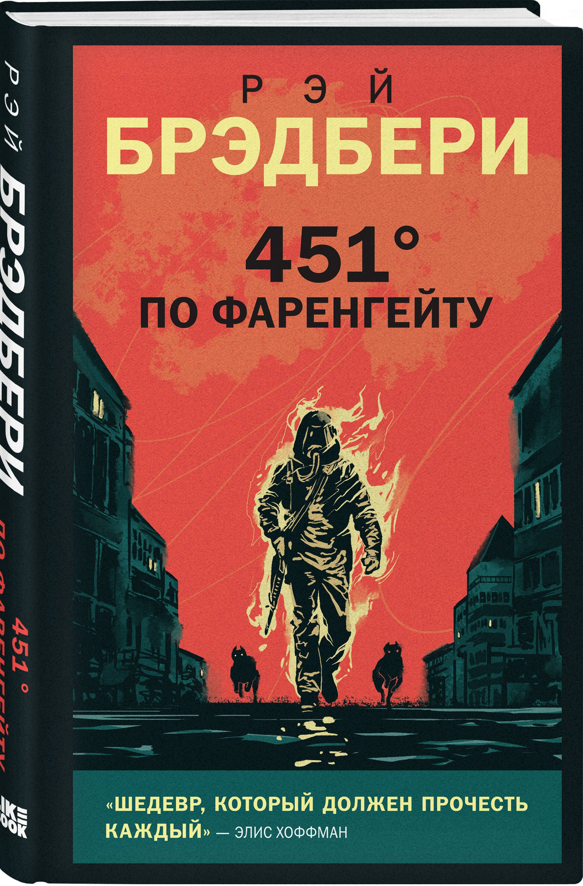

|
|
|

|
Название: Герой нашего времени
Автор: Михаил Лермонтов
Жанр: социально-психологический роман
«Герой нашего времени» — первый в русской прозе социально-психологический роман,
написанный Михаилом Лермонтовым в 1837–1839 годах. Опубликован в 1840 году
и сразу же стал одним из самых значимых произведений русской литературы.
|
|
|

|
Название: Двенадцать стульев
Автор: Ильф и Петров
Жанр: роман
«Двена́дцать сту́льев» — роман Ильи Ильфа и Евгения Петрова,
написанный в 1927 году и являющийся первой совместной работой соавторов.
|
|
|

|
Название: 451 градус по Фаренгейту
Автор: Рэй Дуглас Брэдбери
Жанр: научная фантастика,
антиутопия, философский роман
«451 градус по Фаренгейту» (англ. Fahrenheit 451) —
научно-фантастический роман-антиутопия Рэя Брэдбери,
изданный в 1953 году. Роман описывает американское общество близкого будущего,
в котором книги находятся под запретом
Название книги объясняется в эпиграфе: «451 градус по Фаренгейту — температура,
при которой воспламеняется и горит бумага».
В книге содержится немало цитат из произведений англоязычных авторов прошлого
(таких, как Уильям Шекспир, Джонатан Свифт и другие), а также несколько цитат из Библии.
|
|
|